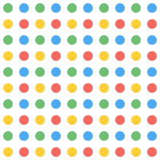

📍 Pattern Dots (pattern_dots.svg)

Padrão de bolinhas coloridas, perfeito para fundos infantis.
📸 Icon Camera Fun (icon_camera_fun.svg)
Ícone de câmera divertida com olhinhos amigáveis.
🏆 Badge Frame Gold (badge_frame_gold.svg)
Moldura dourada com estrelas para badges de conquista.
🌈 Rainbow Arc (rainbow_arc.svg)
Arco-íris decorativo com nuvens nas pontas.